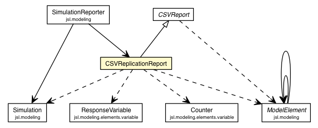

jsl.observers.textfile
Class CSVReplicationReport

java.lang.Object
 jsl.observers.ModelElementObserver
jsl.observers.textfile.CSVReport
jsl.observers.textfile.CSVReplicationReport
jsl.observers.ModelElementObserver
jsl.observers.textfile.CSVReport
jsl.observers.textfile.CSVReplicationReport
- All Implemented Interfaces:
- ObserverIfc, IdentityIfc
public class CSVReplicationReport
- extends CSVReport
| Methods inherited from class jsl.observers.ModelElementObserver |
afterExperiment, beforeReplication, getId, getName, initialize, montecarlo, removedFromModel, replicationEnded, setName, timedUpdate, toString, update, update, warmUp |
myRepCount
protected int myRepCount
CSVReplicationReport
public CSVReplicationReport(String name)
CSVReplicationReport
public CSVReplicationReport(File directory,
String name)
- Makes a report as a file within the supplied File directory
- Parameters:
directory - name -
getReplicationCount
public final int getReplicationCount()
- Returns:
- The number of times afterReplication was called
beforeExperiment
protected void beforeExperiment(ModelElement m,
Object arg)
- Overrides:
beforeExperiment in class CSVReport
writeHeader
protected void writeHeader()
- Specified by:
writeHeader in class CSVReport
writeLine
private void writeLine(Simulation sim,
ResponseVariable rv)
writeLine
private void writeLine(Simulation sim,
Counter c)
afterReplication
protected void afterReplication(ModelElement m,
Object arg)
- Overrides:
afterReplication in class ModelElementObserver
Copyright © 2012 Manuel D. Rossetti. All Rights Reserved.